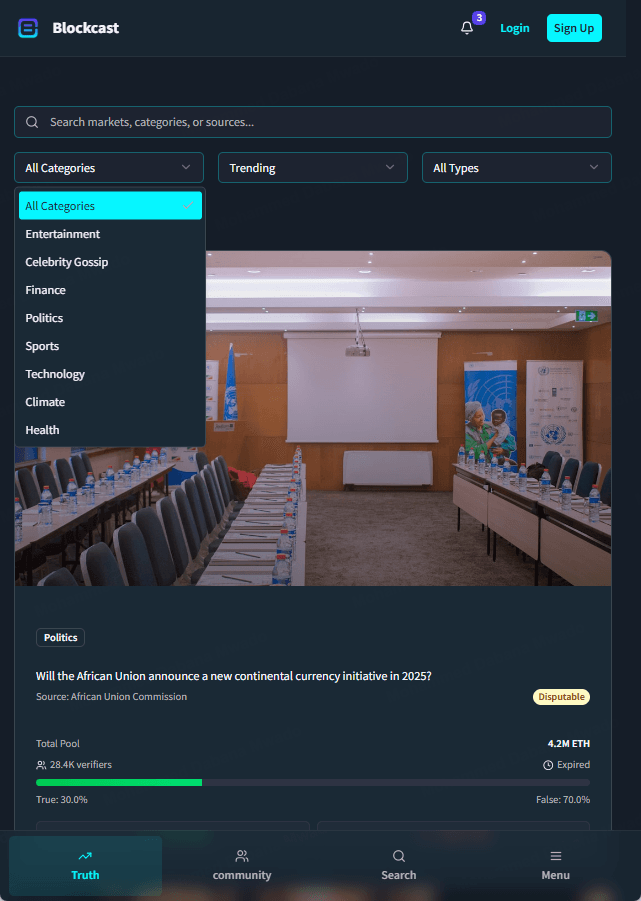
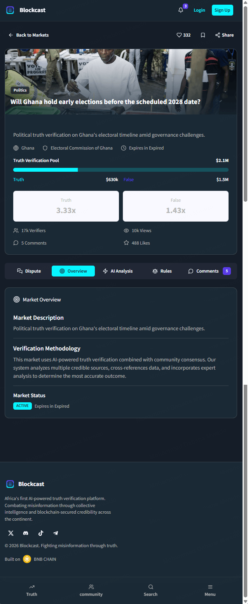
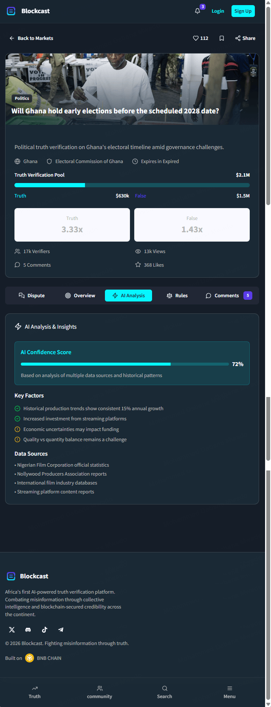
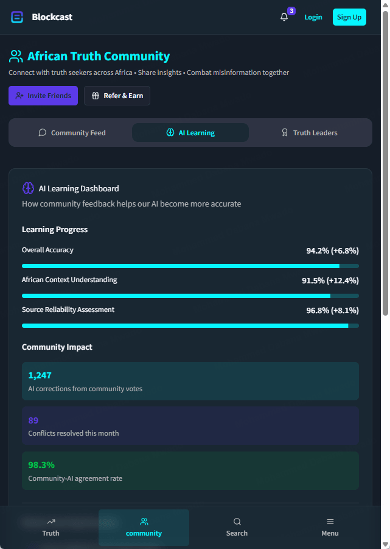
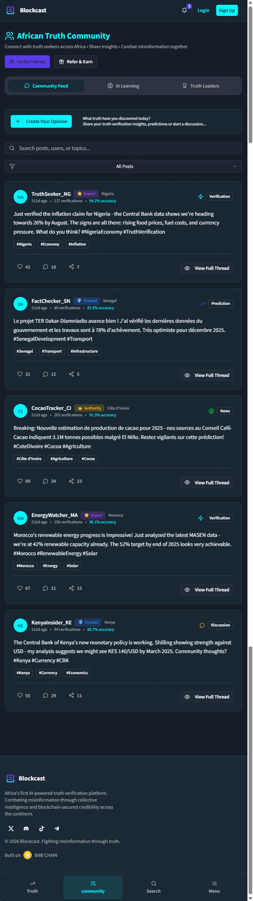
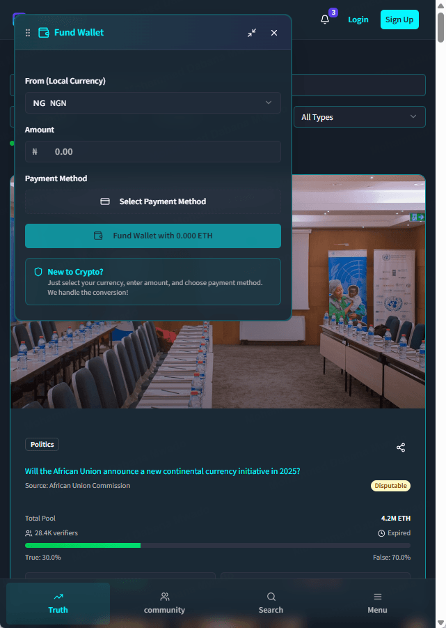
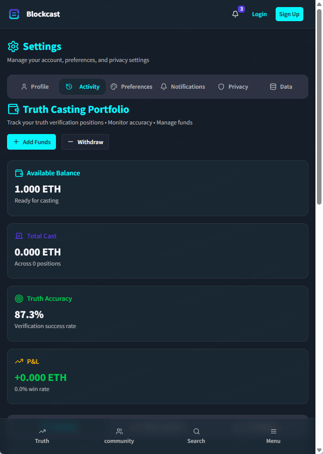
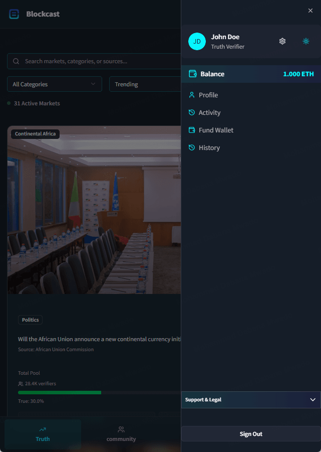

Product & Design · Web3 · 2024-2025
Blockcast
Africa's first AI-powered truth-verification market. Cast on real-world questions, let AI resolve them from credible sources - then challenge any verdict with on-chain evidence.
I validated the idea with a survey, then designed it across four directions - the markets, the verifier flows and the dispute economics - before handing the files to a developer with a development roadmap.
Overview
Who decides what's true online? Blockcast turns that question into a market - and settles it with AI, a community of verifiers, and a paper trail on-chain.
Every market is a real-world yes/no question backed by a credible source. People stake - the app calls it casting - on Truth or False; an AI engine cross-references multiple sources to propose an outcome with a confidence score; and anyone who disagrees can put evidence on-chain and trigger a community dispute. It's positioned as Africa's first truth-verification platform - markets span politics, finance, sport, climate and entertainment across the continent, and it's built on BNB Chain. As product and design lead I validated the concept with a survey, designed the full experience across four directions, then handed it to a developer with a roadmap.
The product
An exchange
for the truth.
Browse markets by category, see the pool and the odds at a glance, then open any question to cast, read the AI's verdict, or join the debate - all from a phone.


Anatomy of a market
One question, five tabs.
Open any market and the whole truth-verification machine sits behind one screen - the pool and odds up top, then tabs for Overview, AI Analysis, Dispute, Rules and Comments.

Overview - the market, and the money on it
The Overview tab is the brief: a plain-language description, the verification methodology and a live status. Above it sits the pool itself - a "Will Ghana hold early elections?" market shows a 2.1M ETH pool, 17k verifiers and a 30/70 split priced at 3.33× / 1.43×.
AI Analysis - the verdict, with its work shown
The AI Analysis tab gives a confidence score, the key factors behind it, and the exact data sources it weighed - so the machine's reasoning is on the table, not hidden.
Dispute - put evidence on-chain
Any verdict marked Disputable can be challenged: stake to dispute, submit written evidence and source links, and let the community weigh in - with the outcome recorded on-chain.
Rules - everyone plays by the same terms
The Rules tab spells out exactly how a market resolves and what counts as valid evidence, so the outcome comes down to the agreed terms, not opinion.
Comments - a discussion that takes a side
The Comments tab is a real debate - each post is tagged Truth, False or Neutral and carries the author's verified reputation, so you can read the room as well as the verdict.
The flywheel
The community
trains the AI.
Every dispute and vote is a correction the model learns from. Blockcast makes that loop visible - and frames accuracy in terms that matter on the continent.

An AI Learning dashboard, not a black box
The Community Hub shows how feedback sharpens the model - overall accuracy at 94.2%, a dedicated African-context understanding score at 91.5%, and source-reliability at 96.8%, each trending up. Below it: 1,247 AI corrections from community votes, 89 conflicts resolved this month, and a 98.3% community-AI agreement rate.
The African Truth Community
Reputation you can read.
Beyond the markets sits a social layer - a feed where verifiers post checks, predictions and news across the continent. Authors carry tiers like Expert, Trusted and Authority, a country flag and a personal accuracy score, and posts arrive in English and French. Invite-friends and refer-and-earn build the network the whole model depends on.
- workspace_premiumReputation tiers + per-user accuracy, earned by being right over time
- forumPosts typed as Verification, Prediction, News or Discussion
- group_addInvite Friends & Refer & Earn to grow the verifier base

Designed for the next user, not the crypto-native
No wallet? No problem.
The biggest barrier to a Web3 product in Africa isn't interest - it's the on-ramp. So the hardest flow got the most design attention: getting money in, and tracking it once it's there.

Fund in local currency
Pick your currency (₦ NGN), enter an amount, choose a payment method - "New to crypto? We handle the conversion."

A Truth Casting Portfolio
Track positions like an investor would - available balance, total cast, a truth-accuracy rate (87.3%) and running P&L with a win rate.

One tap to your wallet
Balance, profile, funding and history live in a single drawer - your identity here is simply "Truth Verifier."
Product decisions
What makes the model work.
Truth as a market
Prediction-market mechanics turn a fuzzy "is this true?" into priced, stakeable odds anyone can read.
AI that shows its work
A confidence score, key factors and named data sources - kept honest by a community allowed to dispute it.
Community-trained AI
Every vote is a correction. A visible learning loop sharpens the model's African-context accuracy over time.
A fiat on-ramp
Fund in naira, cast in ETH. The conversion is hidden so non-crypto users can take part at all.
Provenance on-chain
Disputes and resolutions are recorded on BNB Chain - a verdict you can audit, not just trust.
A dark, focused UI
High-contrast cyan-on-navy keeps a data-heavy interface calm, modern and easy to scan on any screen.
Problem · Process · Craft
Validate a colleague's idea - then design it into something real.
A colleague had carried this idea for years without knowing how to execute it. When he watched a young founder in the US ship something similar - and others pile in - he came to me, frustrated. I told him it was a great idea; first, we had to prove people actually wanted it.
Validate first
Before a single screen, I ran a survey to validate the concept with real people. Once it held up, we committed.
Sketch, wireframe, plan
I jumped into sketching and wireframing the experience and planning the build - multiple back-and-forths to get the structure right.
Four directions, one flow
I designed four different directions and debated the user flow with several colleagues, gathering feedback before we finalised the design.
Hand off & ship
I handed the final files to the developer, wrote a development roadmap, and took the project through hackathons - handing off in December 2025.
The result
A working Web3 product, built for the continent.
Blockcast runs end to end - markets you can browse and cast on, AI verdicts with confidence scores, an on-chain dispute system, a community that trains the model, and a fiat on-ramp so anyone can join - all built on BNB Chain. I led product and design: validated it with a survey, designed the experience across four directions, then handed the final files to a developer with a roadmap and took it through hackathons.